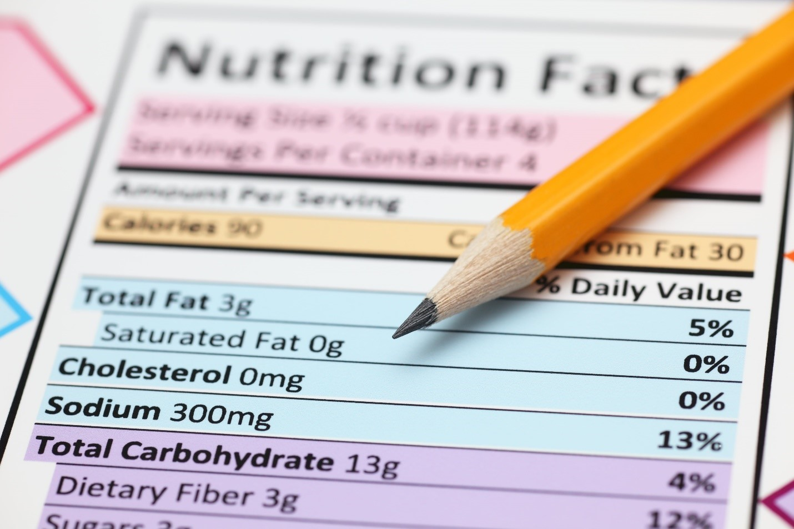

Početna › Istraživanje
Prema FAO/WHO World Declaration on Nutrition (1992) osiguranje dovoljne količine raznovrsne, zdravstveno bezbedne hrane osnovno je ljudsko pravo. Zadovoljenje nutritivnih potreba i osiguranje zdravstvene bezbednosti hrane važni su faktori u prevenciji nastanka čitavog niza bolesti i poremećaja. Stoga su zdrava ishrana i bezbednost hrane uslov postizanja, održavanja i unapređenja zdravlja ljudi.
Hrana je neophodna za ljudski rast, razvoj i telesne funkcije. Dobra ishrana zahteva dobro izbalansiranu hranu koja obezbeđuje adekvatnu dnevnu količinu svih klasa hranljivih materija i optimalni unos energije za ljudsko telo. Hrana mora biti bezbedna, hranljiva i dostupna na održiv način.

Osnovno istraživanje prehrambenih proizvoda i dodataka ishrani, istraživanje mogućnosti za njihovo unapređenje, inovacije i predlaganje inovacionih proizvoda na tržištu.
Istraživanje uticaja funkcionalnih sirovina na zdravlje ljudi i na metabolizam — klinička efikasnost, efektivne doze, bezbednost primene.
Istraživanje uticaja hranljivih sastojaka prehrambenog proizvoda na metabolizam — bioraspoloživost, apsorpcija, interakcije sa organizmom.
Istraživanje uticaja zagađivača hrane koji su u nju dospeli iz životne sredine ili tokom prerade i proizvodnje — identifikacija rizika i preventivne mere.